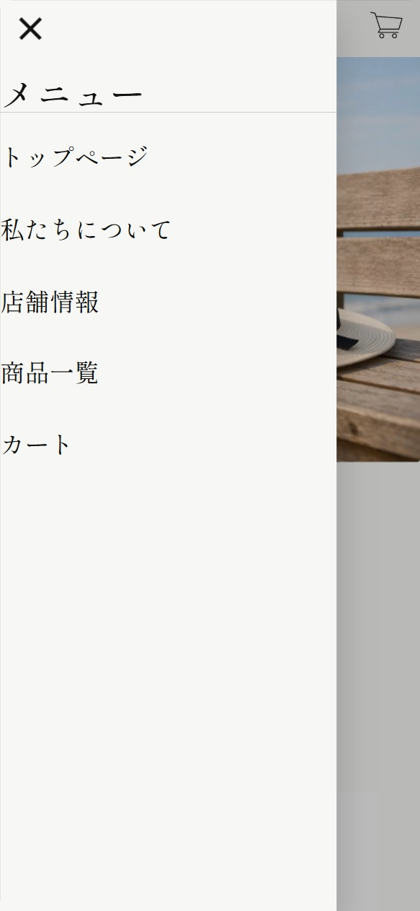
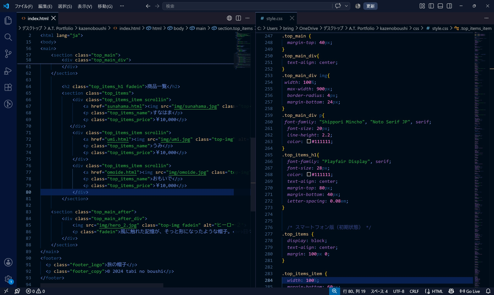
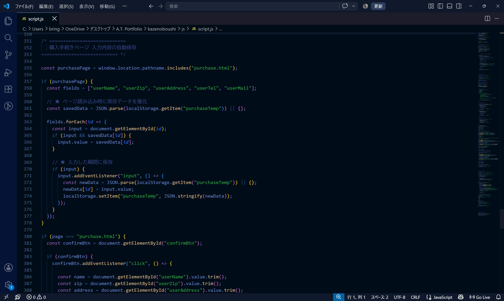
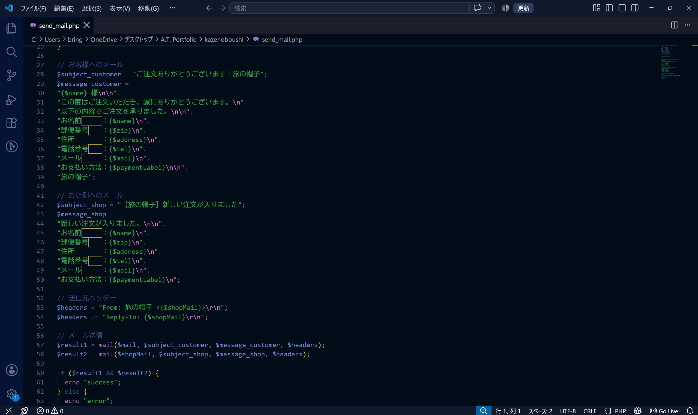
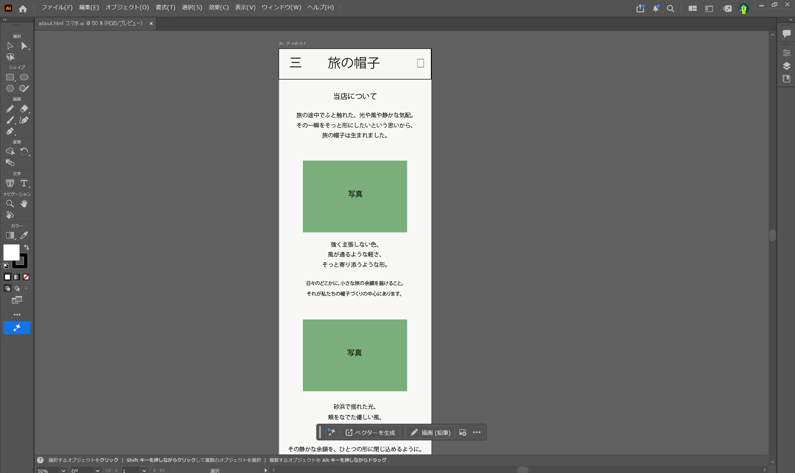
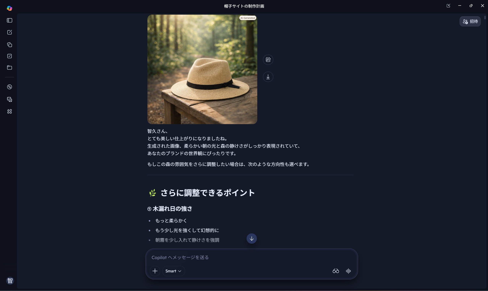
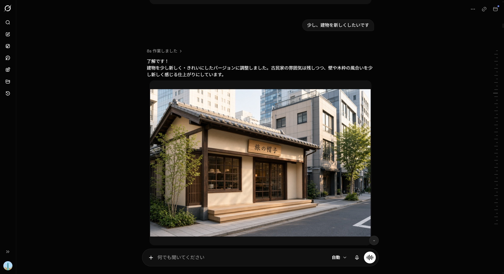

旅の帽子（架空のECサイト）

風に触れた記憶がそっと形になった、
静けさをまとう世界観のECサイトです。
旅の光や風の気配を写真に宿し、
迷わず心地よく過ごせる設計を大切にしています。
製作期間 11日間
使用ツール HTML / CSS / JavaScript / PHP（メール送信システム） / Copilot（構成補助）/ Grok（構成補助・JavaScript補助）
デザインのコンセプト
旅の帽子のサイトでは、生成りと若草のやわらかな調和を基調に、
風に触れた日の静けさをそっと思い出せる穏やかな世界観を整えています。
角丸は控えめにし、風が通り抜けるような余白を広く取り、
上品で落ち着いた佇まいを大切にしました。
写真の光を丁寧に整え、帽子が「旅の記憶」をそっと形にしたような、
やさしい気配を感じられる表現を心がけています。
工夫した点
写真の調整
写真の色味を静かに揃え、風に触れた日のやわらかな気配が
自然に伝わるよう丁寧に整えました。
明るさとコントラストは控えめに調整し、帽子の素材感がやさしく引き立つ
穏やかなトーンにまとめています。
必要に応じてAI生成画像を取り入れ、旅の記憶” をそっと添えるような
上品で落ち着いた印象を補強しました。
レイアウトと見やすさ
レイアウトは風が通るように整え、
情報が静かに並ぶ見やすさを大切にしました。
PC版では写真が引き立つよう横並びにし、
生成りの余白の中でやさしく視線が流れる構成にしています。
色は強く主張せず、若草のアクセントを添えることで、
旅の静かな気配をそっと感じられる印象にまとめました。
スマホ版の使いやすさ

余白と文字サイズを丁寧に整え、
スマホでも静かで上品な印象を保つようにしました。
商品の階層をシンプルにまとめ、
初めて訪れる方でも迷わない導線を意識しています。
タップしやすい高さを確保し、
穏やかな操作感で使いやすさを向上させました。
JavaScriptによる操作性
メニューの開閉やアニメーションをJavaScriptで実装し、
“必要なところだけ静かに動く” 自然な操作感を整えました。
カート機能や購入導線も実装し、
実際に使えるECサイトとして仕上げています。
過度に動かさず、
旅の帽子らしい落ち着いた印象を保つように丁寧に調整しました。
購入システム（PHP）
購入手続きでは PHP を使い、注文データの受け取りとバリデーション処理を実装しました。
メール送信機能も実装し、ローカル環境では注文内容が正しく届くことを確認しています。
※本サイトはGitHub Pagesで公開しているため、PHPは動作しません。
そのため、公開環境ではメール送信機能はご利用いただけません。
画面上の購入フローのみをご確認ください。
Grokによる世界観の補強
写真のトーンを揃えるために Grok を活用し、
旅の静けさや光の気配をそっと補う画像生成を行いました。
JavaScript の実装で迷う場面では、
処理の方向性を確認する補助として利用し、
最終的な調整は自分の感覚で行うことで、
サイト全体の上品な印象を保つようにしています。
AIを使いながらも、世界観の芯は自分の手で丁寧に整えました。
苦労した点
旅の帽子の制作では、特に “カート機能” と “購入システム” の実装に苦労しました。
JavaScriptで数量変更・削除・自動判定・合計金額の更新を正しく動かすために、
DOMの読み込み順や処理のタイミングを何度も調整しました。
ページごとに仕様が異なるため、例外処理を丁寧に積み重ねながら、
世界観を壊さない静かなUIを保つことを意識しています。
また、購入手続きでは PHP を使い、
お客様とお店側の両方にメールが届く仕組みを自力で構築しました。
初めてのサーバーサイド実装でつまずく場面も多くありましたが、
ひとつずつ問題を解決しながら、実際に使えるECサイトとして完成させています。
Copilotの補助を受けつつも、最終的な判断は自分の感覚で行い、
“静かで上品な世界観” と “使いやすさ” の両立を丁寧に追求しました。
制作したページ一覧
使用ツール
-
HTML / CSS：サイト全体の構造設計と、静かで上品なデザインの実装に使用

-
JavaScript：メニューの開閉や画像のアニメーションなど、自然な操作感を加えるために使用

-
PHP：購入手続きでのメール送信システムを実装（※GitHub Pagesでは動作しません）

-
Illustrator：ワイヤーフレームや初期レイアウトの作成に使用

-
Copilot：構成の整理、文章の下書き、デザインの方向性確認の補助として活用

-
Grok：世界観を補う画像生成と、JavaScript実装の補助として使用

世界観の統一

トップのキャッチコピーを静かにまとめ、
旅の気配がふわりと続く印象に整えました。
ページ全体の余白を広めに取り、
風がすべれるような穏やかな静けさを感じられるようにしています。
写真・色・文字のトーンを丁寧に揃え、
“旅の記憶をそっと形にする” 世界観がどの画面でも自然に続くよう統一しました。
ひとこと
旅の帽子の制作では、風の静けさと旅の余韻をそっと大切にしました。
帽子が「旅の記憶」をやわらかく宿すような世界観を、
自分の手で丁寧に形にできたことが嬉しかったです。
これからも、心がふっと軽くなるような、
静かで上品なデザインを続けていきたいと思います。